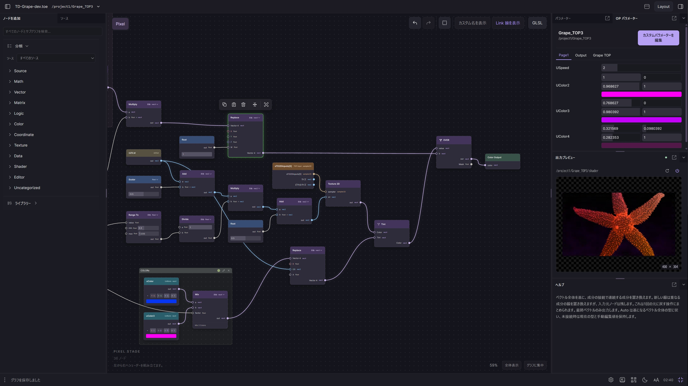
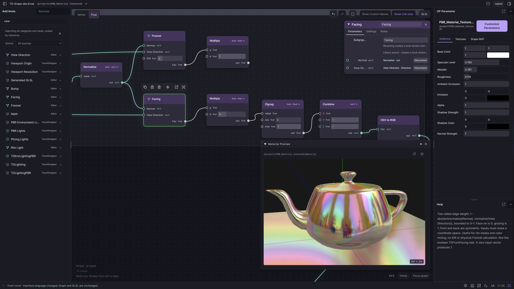
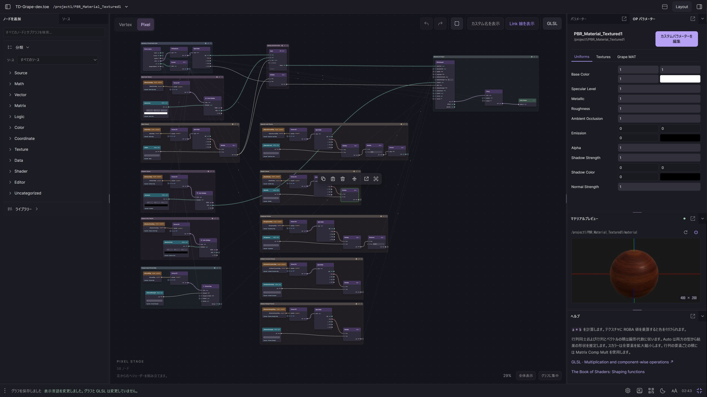

HISTORICAL REFERENCE · NOT LIVE CAPTURES
保留我們已喜歡的設計。
這五張是 owner 先前提供的舊產品截圖，原檔逐位元保存。它們補充整體視覺構圖；本輪實際產品觀察另記於 LIVE-001～004。節點外觀是 owner 明確要求保留的設計，工具列位置與面板配置則依 DESIGN_PREMISES 區分必要效果與可調配置。
不是新 UI 提案，也不是重構完成圖。截圖不能證明拖曳、Undo、持久化、Host authority 或 Preview 的即時性；完整互動以觀察紀錄與已接受契約判定。
LUI-01MAT Vertex · 停靠工作空間
Sources、Parameter、Material Preview、Help，角色色與資料型別色並存。畫面版本 0.8.271 DEV。
3842 × 2160 · 查看原尺寸 · capture timestamp 未獨立驗證
 LUI-02
LUI-02TOP Pixel · 數值與色彩
日文介面、色彩分量、來源與運算節點、結果預覽。
3842 × 2160 · 查看原尺寸 · capture timestamp 未獨立驗證

LUI-03搜尋 · Canvas 浮動面板
搜尋 view、選取 Facing；浮動 Inspector 與 Preview，右側 OP Parameter 保留。
3842 × 2160 · 查看原尺寸 · capture timestamp 未獨立驗證

LUI-04全圖 · 分組與層級
29% 視野，多個語意群組與跨區接線。不能由截圖斷言 Overview 實驗功能啟用。
3842 × 2160 · 查看原尺寸 · capture timestamp 未獨立驗證

LUI-05節點細節 · 動態接口
Voronoi、Swizzle、Mapping、Split；浮動 Inspector 與 Preview。底部 TD 未回應不證明預覽影像是即時畫面。
3842 × 2160 · 查看原尺寸 · capture timestamp 未獨立驗證